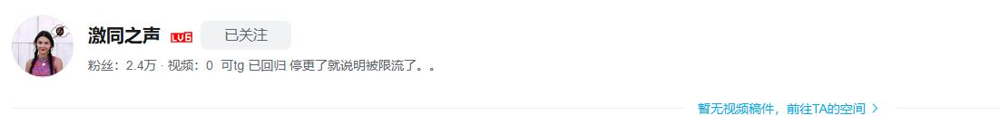
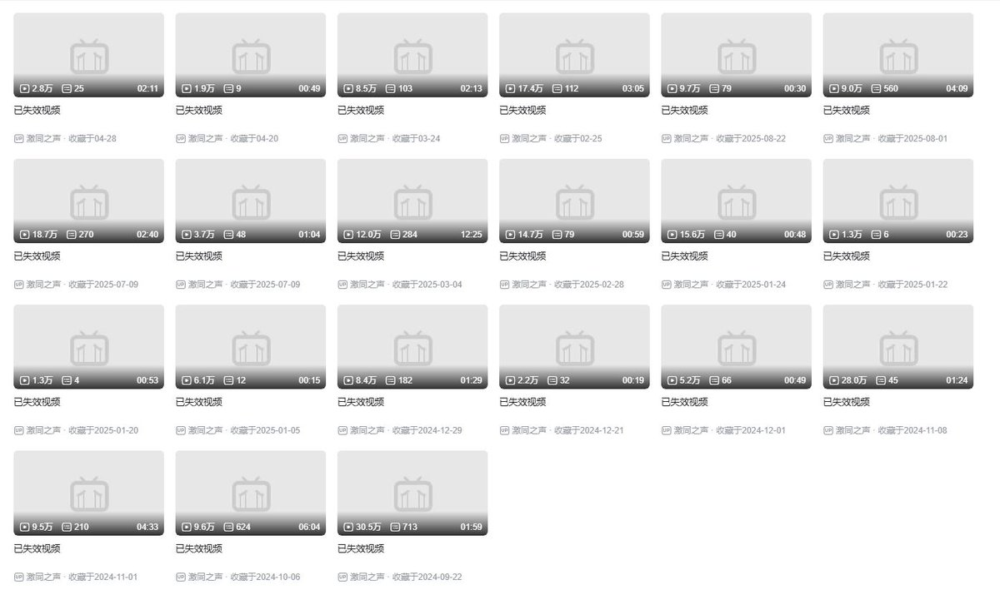

時璃風医詩🌈🏳️🌈
@hagishigure
这就是为什么我习惯说中文的时候满口术语的原因。在中文大禁言环境下不说术语基本说不了话。


咸福宫日记
@Alantur57426778
所有人！赶紧打开B站看下自己的收藏夹！
今天得到消息，它们动手了。
激同之声账号被清空，激同电台涉及性少数的视频被全数下架，最最温和的小shyzz也损失过半。
来不及可惜了，当务之急是抢救幸存者！
对不住各位，我不是称职的记录员，
还请大家惠存火种，不要让我们这些年的发声被后世遗忘！ https://t.co/RNhP3IaSEQ